Galerij
Nieuwe beelden, direct verweven in de site.
Hier vind je de nieuwste fotoselectie van Isla Vayne in dezelfde luxe stijl als de rest van de website. De beelden staan nu ook verspreid over de belangrijkste pagina's.
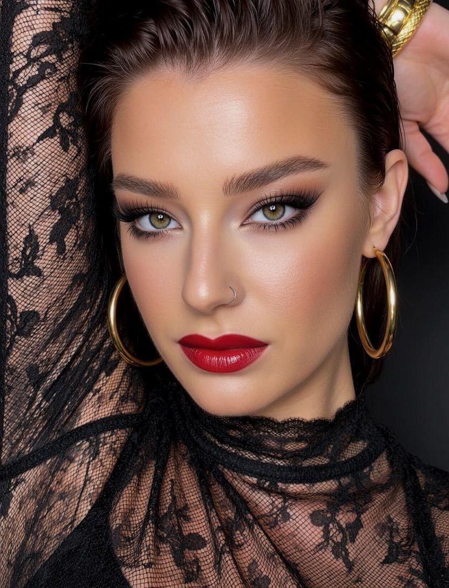
Fotoselectie
Alle nieuwe foto's overzichtelijk op een plek.
De galerij is opnieuw opgebouwd zodat hij qua navigatie, sfeer en styling aansluit op de hoofdsite. Daardoor voelt dit nu als een geheel in plaats van een losse pagina.
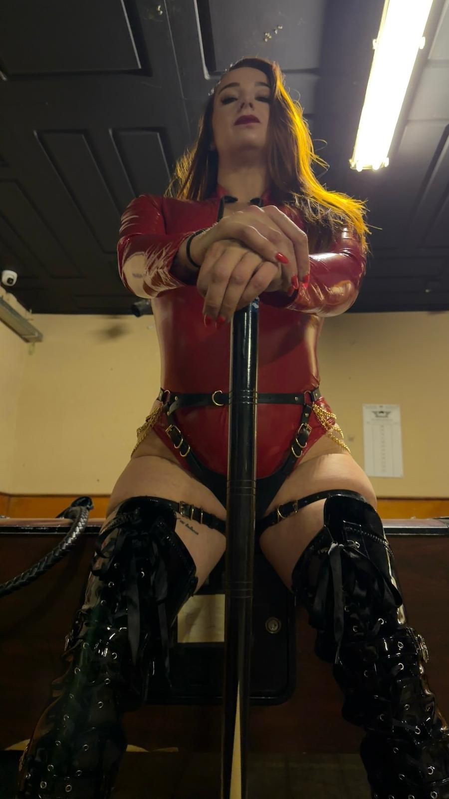
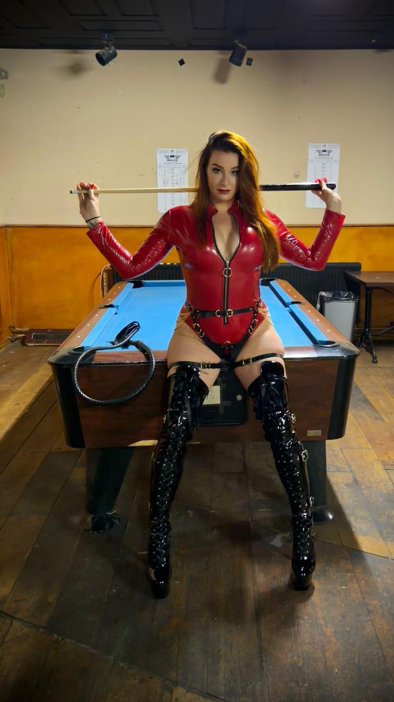
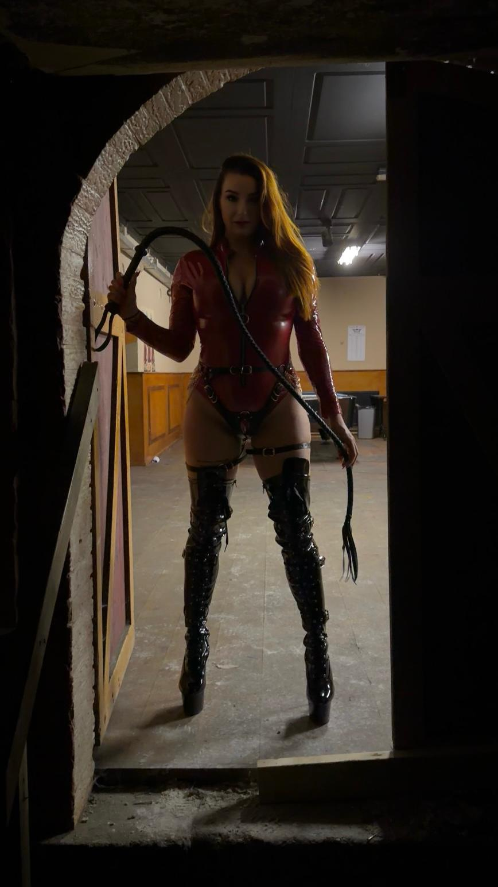
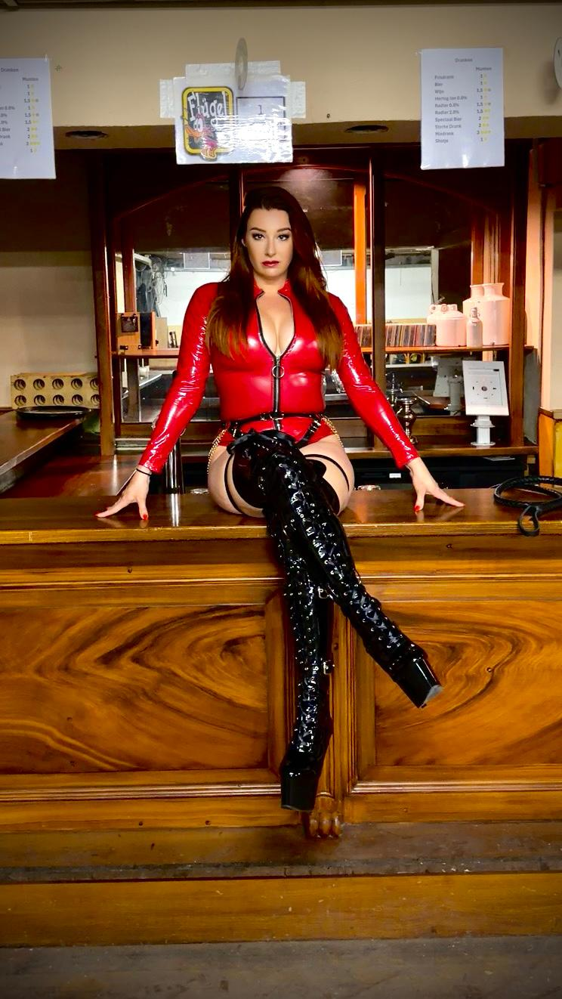
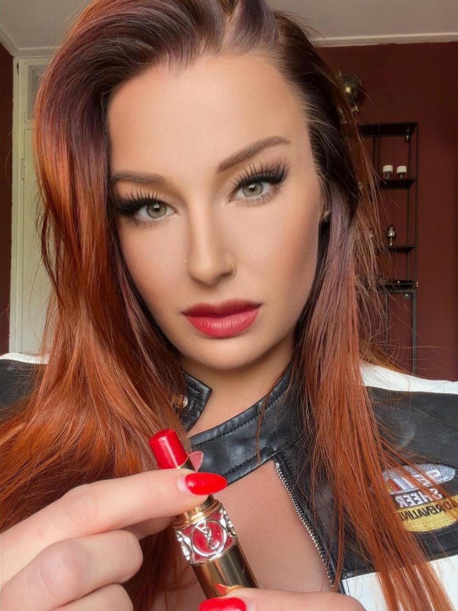


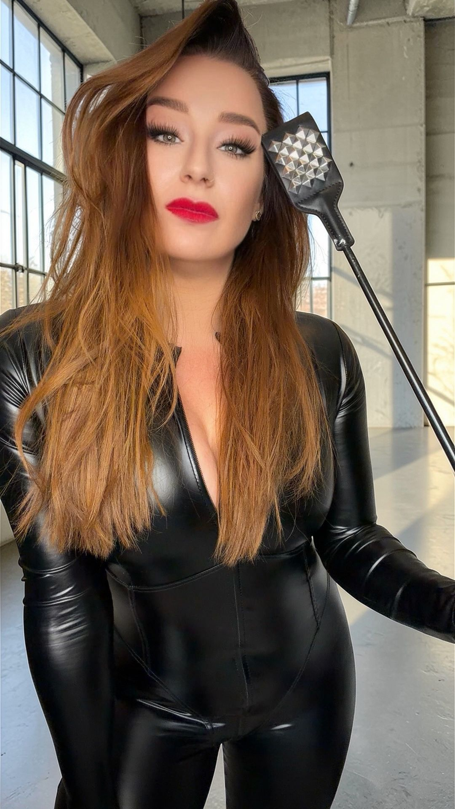
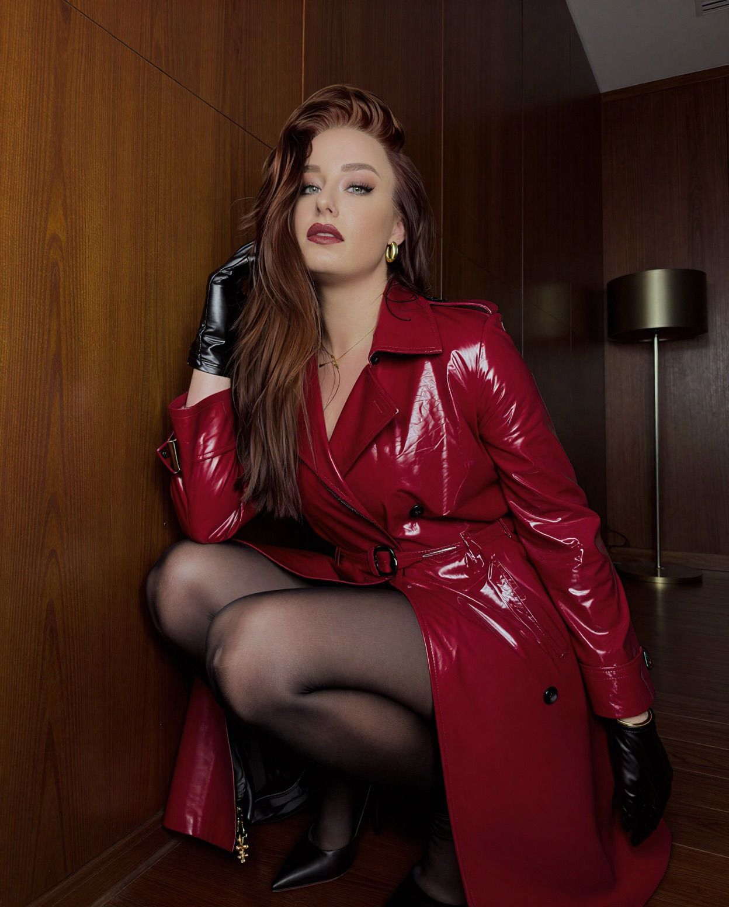
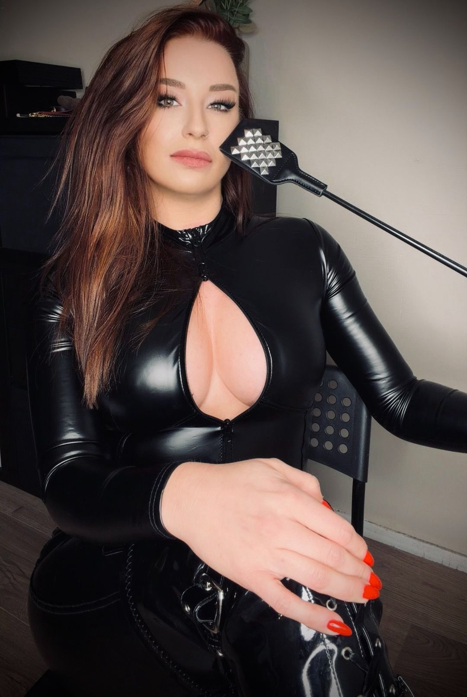
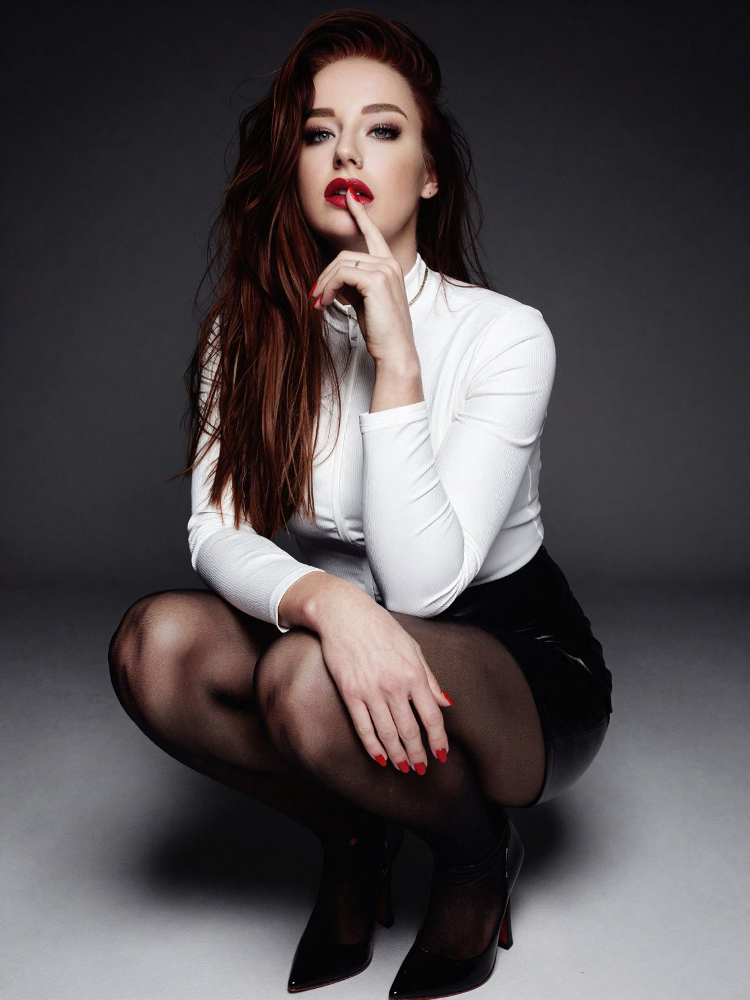
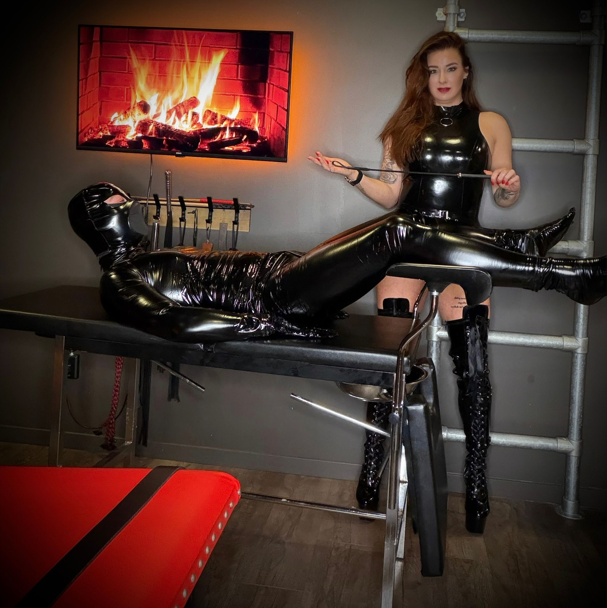